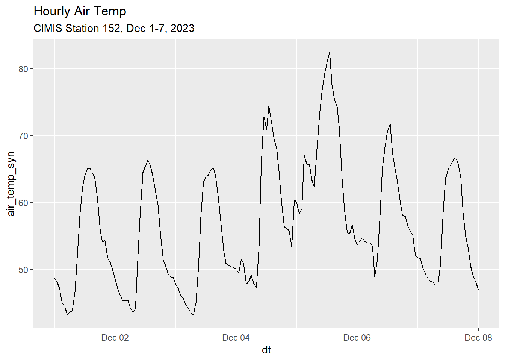
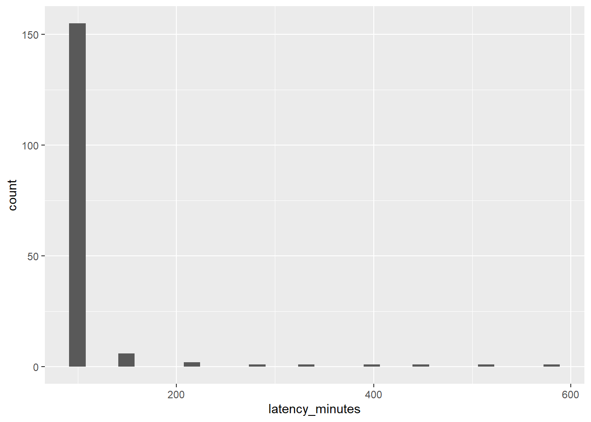

Importing CIMIS Station Data with the Synoptic API
Intro
The CIMIS Web API works well when it works, but has some problems with reliability 1. At times the API returns an error, and/or doesn’t return anything at all. The timeout errors usually just last for a few minutes, but they can be hard to predict. This makes it problematic to use in a production DST, such as the Irrigation Calculator.
This notebook documents how we can use the Synoptic API as an alternative source for CIMIS station data. Synoptic is a third-party aggregator of weather data. They seem to be well established, have a pretty generous free tier for academics (are a b-corps), and have a well documented API.
TLDR: The Synoptic API hosts a copy of data from the CIMIS network, and can be used to access station data. The latency period (i.e., the number of minutes it takes from a measurement at a station to find its way to Synoptic) is pretty good (< 2 hours for the station we look at). However not all of the fields are imported, and for some reason there has been no data from CIMIS flowing into Synoptic for the past 2 weeks (which we assume to be a temporary glitch). Conclusions:
The Synoptic API is a good source for CIMIS station data for research purposes, and is probably the preferred source for use-cases where you want to compare CIMIS station data against other weather stations.
The Synoptic API is probably not a good substitute for the CIMIS API for production apps (i.e., an irrigation calculator). At least not until the data start flowing again. There are also limits on the number of calls and simultaneous access using a free educational Synoptic account. One could however use the Synoptic API to cache CIMIS data.
Accessing the Synoptic API
We start by loading some packages, including httr2 which we’ll use to make calls to the Synoptic API:
library(httr2)
library(lubridate)
library(dplyr)
library(purrr)
library(stringr)
library(ggplot2)
library(tidyr)
Where are the Weather Stations?
You can find weather stations available thru Synoptic using the Synoptic Data Viewer. But here, we’ll use the Metadata endpoint to map all the weather stations Synoptic hosts (not just CIMIS) within a geographic area.
Step 1 is to load one of my public tokens for the Synoptic API, which I keep saved in a text file. (If you don’t already have one, you can sign-up for one here).
my_public_token <- readLines("~/My Keys/synoptic-api.txt", n=1)To find stations, we’ll use the Metadata API.
Pro Tip: A good way to learn how construct a Synoptic API URL, including all the optional arguments, is to use the Weather API Query Builder).
ventura_stations_metadata_url <- paste0(
"https://api.synopticdata.com/v2/stations/metadata?",
"&token=", my_public_token,
"&complete=1",
"&state=CA",
"&county=Ventura")Next, we create a request object with this URL as the centerpiece.
ventura_stations_metadata_req <- request(ventura_stations_metadata_url)We don’t need to add any headers (if we did, we could modify the request object using various req_*() functions), so we can just send it:
ventura_stations_metadata_resp <- req_perform(ventura_stations_metadata_req)From here we can extract the body of the response as a list:
venstn_lst <- resp_body_json(ventura_stations_metadata_resp)Now we can drill down into the stations:
Pro Tip: a good way to explore the structure of a big list object is to open it in the View pane in RStudio (click on the Preview button next to the list in the environment pane).
## Number of stations found:
venstn_lst$SUMMARY$NUMBER_OF_OBJECTS[1] 526View the metadata for the first station:
venstn_lst$STATION[[1]]$ID
[1] "134"
$STID
[1] "KCMA"
$NAME
[1] "Camarillo, Camarillo Airport"
$ELEVATION
[1] "75.0"
$LATITUDE
[1] "34.21667"
$LONGITUDE
[1] "-119.08333"
$STATUS
[1] "ACTIVE"
$MNET_ID
[1] "1"
$STATE
[1] "CA"
$TIMEZONE
[1] "America/Los_Angeles"
$ELEV_DEM
[1] "88.6"
$NWSZONE
[1] "CA355"
$NWSFIREZONE
[1] "LOX355"
$GACC
[1] "SOCC"
$SHORTNAME
[1] "ASOS/AWOS"
$SGID
[1] "SC08"
$COUNTY
[1] "Ventura"
$COUNTRY
[1] "US"
$WIMS_ID
NULL
$CWA
[1] "LOX"
$PERIOD_OF_RECORD
$PERIOD_OF_RECORD$start
[1] "1999-11-14T00:00:00Z"
$PERIOD_OF_RECORD$end
[1] "2024-01-31T16:25:00Z"
$PROVIDERS
$PROVIDERS[[1]]
$PROVIDERS[[1]]$name
[1] "National Weather Service"
$PROVIDERS[[1]]$url
[1] "http://www.weather.gov"
$UNITS
$UNITS$position
[1] "m"
$UNITS$elevation
[1] "ft"
$RESTRICTED
[1] FALSEUse purrr::map_dfr to create a tibble of the stations that we can use in a map:
venstn_loc_tbl <- map_dfr(
venstn_lst$STATION,
`[`,
c("STID", "NAME", "LONGITUDE", "LATITUDE", "STATUS", "MNET_ID")
)
venstn_period_tbl <- map_dfr(
venstn_lst$STATION,
function(x) data.frame(DATA_START = ifelse(is.null(x[["PERIOD_OF_RECORD"]][["start"]]), NA, x[["PERIOD_OF_RECORD"]][["start"]]) ,
DATA_END = ifelse(is.null(x[["PERIOD_OF_RECORD"]][["end"]]), NA, x[["PERIOD_OF_RECORD"]][["end"]]))) |>
mutate(DATA_START = str_sub(DATA_START, start = 1, end = 10),
DATA_END = str_sub(DATA_END, start = 1, end = 10))
venstn_tbl <- bind_cols(venstn_loc_tbl, venstn_period_tbl)
head(venstn_tbl)# A tibble: 6 × 8
STID NAME LONGITUDE LATITUDE STATUS MNET_ID DATA_START DATA_END
<chr> <chr> <chr> <chr> <chr> <chr> <chr> <chr>
1 KCMA Camarillo, Camari… -119.083… 34.21667 ACTIVE 1 1999-11-14 2024-01…
2 KNSI San Nicolas Islan… -119.455… 33.23379 ACTIVE 1 1998-10-01 2024-01…
3 KNTD Point Mugu, Naval… -119.121… 34.12389 ACTIVE 1 1998-12-15 2024-01…
4 KOXR Oxnard, Oxnard Ai… -119.203… 34.20056 ACTIVE 1 1997-04-12 2024-01…
5 CEEC1 CHEESEBORO -118.719… 34.1865… ACTIVE 2 1999-12-02 2024-01…
6 CUUC1 CHUCHUPATE -119.013… 34.8063… ACTIVE 2 1999-12-02 2024-01…The station metadata includes the network ID (MNET_ID), but not the name of the network (i.e., ‘CIMIS’). So we need to get the Networks table so we can add that to our map:
networks_lst <- paste0("https://api.synopticdata.com/v2/networks?&token=",
my_public_token) |>
request() |>
req_perform() |>
resp_body_json()
networks_tbl <- networks_lst$MNET |>
map_dfr(`[`, c("ID", "SHORTNAME", "LONGNAME", "URL",
"CATEGORY", "LAST_OBSERVATION", "ACTIVE_STATIONS")) |>
rename(MNET_ID = ID,
network_short = SHORTNAME,
network_long = LONGNAME)
networks_tbl |> head()# A tibble: 6 × 7
MNET_ID network_short network_long CATEGORY LAST_OBSERVATION ACTIVE_STATIONS
<chr> <chr> <chr> <chr> <chr> <int>
1 1 ASOS/AWOS ASOS/AWOS 4 2024-01-31T16:3… 2619
2 2 RAWS Interagency R… 9 2024-01-31T16:3… 2324
3 3 DUGWAY U.S. Army Dug… 4 2024-01-31T16:3… 30
4 4 UTAH DOT Utah Departme… 10 2024-01-31T16:2… 188
5 5 ARL FRD NOAA Air Reso… 4 2024-01-31T16:2… 34
6 6 AVALANCHE Forest Servic… 5 2024-01-31T16:3… 44
# ℹ 1 more variable: URL <chr>Make a leaflet map
We now have everything we need to make a leaflet map. The first step is to make a sf object for the stations.
library(sf)Linking to GEOS 3.11.2, GDAL 3.6.2, PROJ 9.2.0; sf_use_s2() is TRUE## Create a sf object
venstn_sf <- venstn_tbl |>
st_as_sf(coords = c("LONGITUDE", "LATITUDE"), crs = 4326) |>
left_join(networks_tbl, by = "MNET_ID")
head(venstn_sf)Simple feature collection with 6 features and 12 fields
Geometry type: POINT
Dimension: XY
Bounding box: xmin: -119.4559 ymin: 33.23379 xmax: -118.7196 ymax: 34.80637
Geodetic CRS: WGS 84
# A tibble: 6 × 13
STID NAME STATUS MNET_ID DATA_START DATA_END geometry
<chr> <chr> <chr> <chr> <chr> <chr> <POINT [°]>
1 KCMA Camarillo,… ACTIVE 1 1999-11-14 2024-01… (-119.0833 34.21667)
2 KNSI San Nicola… ACTIVE 1 1998-10-01 2024-01… (-119.4559 33.23379)
3 KNTD Point Mugu… ACTIVE 1 1998-12-15 2024-01… (-119.1217 34.12389)
4 KOXR Oxnard, Ox… ACTIVE 1 1997-04-12 2024-01… (-119.2031 34.20056)
5 CEEC1 CHEESEBORO ACTIVE 2 1999-12-02 2024-01… (-118.7196 34.18657)
6 CUUC1 CHUCHUPATE ACTIVE 2 1999-12-02 2024-01… (-119.0136 34.80637)
# ℹ 6 more variables: network_short <chr>, network_long <chr>, CATEGORY <chr>,
# LAST_OBSERVATION <chr>, ACTIVE_STATIONS <int>, URL <chr>Now we can make the leaflet map:
library(leaflet)
## Create the leaflet object
m <- leaflet(venstn_sf) |>
addCircleMarkers(radius = 5,
fillColor = ~ifelse(STATUS == "ACTIVE", "#0000ff", "#333"),
stroke = FALSE,
fillOpacity = 0.6,
popup = ~paste0("<h3>", NAME, "</h3>",
"<p>Status: ", STATUS, "<br/>",
"Network: ", network_short, " (",
network_long, ")<br/>",
"Latest observation: ", DATA_END, "<br/>",
"Station ID (Synoptic): <tt>", STID, "</tt></p>")) |>
addTiles()
m
This map is also available at https://rpubs.com/ajlyons/weather-stations-ventura.
Exploring Data for One Station
To explore the data available from Synoptic, we’ll import time series data from CIMIS Station #152 (Camarillo) via the Synoptic API.
Synoptic hosts data from thousands of weather stations across the USA, and each one has a unique ID. To query station data, you need to know the Synoptic Station ID (STID). The easiest way to find the SDID for a station is thru the Synoptic Data Viewer. You can also find a station ID via the API by downloading metadata for all the stations in a network and then search by name (not shown here). The Station ID for CIMIS station #152 is CI152.
Pro Tip: To see the availability of data for a specific station, you can use the data availability tool:
As of this writing, the latest availability of this station is 1/8/24 (>2 weeks ago). To check the availability of CIMIS data in general, we can check the availability of the CIMIS network (CIMIS Network ID = 66).
https://availability.synopticdata.com/networks/#66
This reveals that as of this writing there have been no data from the CIMIS network have been ingested since for over 2 weeks (in other words, it’s not just this station).
Following the documentation for the timeseries endpoint, we’ll construct a URL to retrieve hourly data for one week in December 2023.
Important notes about the Timeseries Endpoint:
#1. The Synoptic API only serves CIMIS data at its finest temporal resolution (i.e., hourly). If you want daily, weekly, or monthly averages, you’ll hve to compute them yourself.
#2. The time series documentation tells us that we have to pass the date-time values for the start and end arguments in UTC, which is 8 hours ahead of local time.
Construct a URL for the timeseries end point:
# Time Series for a single station (CI152), date range, four variables (only), English units, local time
start_dt_utc_chr <- "202312010800"
end_dt_utc_chr <- "202312080800"
ci152_url <- paste0("https://api.synopticdata.com/v2/stations/timeseries?token=",
my_public_token,
"&stid=CI152", ## CIMIS Station #152
"&vars=air_temp,evapotranspiration,precip_accum_one_hour,soil_temp",
"&varsoperator=and", ## get all variables
"&units=english", ## imperial units
"&start=", start_dt_utc_chr, ## UTC time (+8)
"&end=", end_dt_utc_chr, ## UTC time (+8)
"&obtimezone=local") ## send back timestamps in local timeSend the request:
ci152_resp <- ci152_url |>
request() |>
req_perform()
ci152_resp |> resp_status_desc()[1] "OK"Convert the response body to a list:
ci152_data_lst <- resp_body_json(ci152_resp)View some properties:
## How many objects (we expect 1 - CIMIS Station 152)
ci152_data_lst$SUMMARY$NUMBER_OF_OBJECTS[1] 1## View the first station ID and name
ci152_data_lst$STATION[[1]]$STID[1] "CI152"ci152_data_lst$STATION[[1]]$NAME[1] "Camarillo"## View the period of record for this station (not the data)
ci152_data_lst$STATION[[1]]$PERIOD_OF_RECORD$start[1] "2003-10-17T00:00:00Z"ci152_data_lst$STATION[[1]]$PERIOD_OF_RECORD$end[1] "2024-01-08T19:00:00Z"## View the time zone of these data
(ci152_data_tz <- ci152_data_lst$STATION[[1]]$TIMEZONE)[1] "America/Los_Angeles"## View the air temp units
ci152_data_lst$UNITS$air_temp[1] "Fahrenheit"To convert the list to data frame, we first extract the variables we want as individual vectors:
## Get the date times for the time series
ci152_data_datetime_chr <- ci152_data_lst$STATION[[1]]$OBSERVATIONS$date_time |> unlist()
## Explore the format
ci152_data_datetime_chr[1:2][1] "2023-12-01T00:00:00-0800" "2023-12-01T01:00:00-0800"## Convert to a POSIXct object, in the local timezone
ci152_data_datetime_chr[1:2] |> ymd_hms(tz = ci152_data_tz)Date in ISO8601 format; converting timezone from UTC to "America/Los_Angeles".[1] "2023-12-01 00:00:00 PST" "2023-12-01 01:00:00 PST"Create a vector of time stamps:
ci152_data_dt <- ci152_data_datetime_chr |>
ymd_hms(tz = ci152_data_tz)Date in ISO8601 format; converting timezone from UTC to "America/Los_Angeles".Create a vector of air temp values:
ci152_data_airtemp <- ci152_data_lst$STATION[[1]]$OBSERVATIONS$air_temp_set_1 |> unlist()
glimpse(ci152_data_airtemp) num [1:169] 48.7 48 47.2 45 44.4 43.1 43.6 43.8 46.6 51.7 ...Create a vector of precipitation values:
ci152_data_precip_accum <- ci152_data_lst$STATION[[1]]$OBSERVATIONS$precip_accum_one_hour_set_1 |> unlist()
glimpse(ci152_data_precip_accum) num [1:169] 0 0 0 0.06 0 0 0 0 0 0 ...Create a vector of ET values:
ci152_data_et <- ci152_data_lst$STATION[[1]]$OBSERVATIONS$evapotranspiration_set_1 |> unlist()
glimpse(ci152_data_et) num [1:169] 0 0 0 0 0 0 0 0 0 0 ...Create a vector of ET values:
ci152_data_stemp <- ci152_data_lst$STATION[[1]]$OBSERVATIONS$soil_temp_set_1 |> unlist()
glimpse(ci152_data_stemp) num [1:169] 51.8 51.2 50.6 49.9 49.3 48.8 48.2 47.7 47.3 47.2 ...Put them all together in a tibble:
## Compute a tibble with the hourly values
ci152_data_tbl <- tibble(dt = ci152_data_dt,
date = date(ci152_data_dt),
air_temp_syn = ci152_data_airtemp,
precip_syn = ci152_data_precip_accum,
et_syn = ci152_data_et,
soil_temp_syn = ci152_data_stemp)
head(ci152_data_tbl)# A tibble: 6 × 6
dt date air_temp_syn precip_syn et_syn soil_temp_syn
<dttm> <date> <dbl> <dbl> <dbl> <dbl>
1 2023-12-01 00:00:00 2023-12-01 48.7 0 0 51.8
2 2023-12-01 01:00:00 2023-12-01 48 0 0 51.2
3 2023-12-01 02:00:00 2023-12-01 47.2 0 0 50.6
4 2023-12-01 03:00:00 2023-12-01 45 0.06 0 49.9
5 2023-12-01 04:00:00 2023-12-01 44.4 0 0 49.3
6 2023-12-01 05:00:00 2023-12-01 43.1 0 0 48.8ggplot(ci152_data_tbl, aes(x=dt, y=air_temp_syn)) +
geom_line() +
ggtitle("Hourly Air Temp",
subtitle = "CIMIS Station 152, Dec 1-7, 2023")
Check the latency
The Latency end point tells us how long it takes for a measurement on the weather station to be available in Synoptic.
First, construct a URL for the Latency endpoint as described in the docs:
latency_url <- paste0("https://api.synopticdata.com/v2/stations/latency?token=",
my_public_token,
"&stid=CI152",
"&start=", start_dt_utc_chr,
"&end=", end_dt_utc_chr,
"&stats=mean")Next, create the request object, perform the request, and parse the results into a list:
latency_lst <- latency_url |>
request() |>
req_perform() |>
resp_body_json()Pull out the latency values for this time period into a tibble:
ci152_latency_tbl <- tibble(
dt = ymd_hms(latency_lst$STATION[[1]]$LATENCY$date_time, tz = ci152_data_tz),
latency_minutes = latency_lst$STATION[[1]]$LATENCY$values |> unlist()
)Date in ISO8601 format; converting timezone from UTC to "America/Los_Angeles".ggplot(ci152_latency_tbl, aes(x=latency_minutes)) +
geom_histogram()`stat_bin()` using `bins = 30`. Pick better value with `binwidth`.
Compute the mean and median:
median(ci152_latency_tbl$latency_minutes)[1] 95mean(ci152_latency_tbl$latency_minutes)[1] 110.3964This shows that the vast majority of measurements from this CIMIS station were available in Synoptic within 95 minutes of being recorded.
Download the Same Data Using the CIMIS API
For comparison purposes, next we download the same data from the CIMIS API.
First, we load cimir and my CIMIS API key:
library(cimir)Set your CIMIS App Key with "set_key()".## Set my API key
my_cimis_key <- readLines("~/My Keys/cimis_webapi.txt", n=1, warn = FALSE)
set_key(my_cimis_key)Next, we get the same set of variables for Station #152, for the same time period as above, using cimir::cimis_data(). This function allows us to import either hourly or daily data.
camrillo_hly_lng_fn <- "synoptic-cimis_camrillo_hly_lng.Rds"
## If I already downloaded the data, load the cached copy
if (file.exists(camrillo_hly_lng_fn)) {
camrillo_hly_lng_tbl <- readRDS(camrillo_hly_lng_fn)
} else {
### Query CIMIS data (Camrillo)
camrillo_hly_lng_tbl <- cimis_data(targets = 152,
start.date = "2023-12-01",
end.date = "2023-12-07",
measure.unit = "E",
items = "hly-air-tmp,hly-eto,hly-asce-eto,hly-precip,hly-soil-tmp")
saveRDS(camrillo_hly_lng_tbl, camrillo_hly_lng_fn)
}
dim(camrillo_hly_lng_tbl)[1] 840 14camrillo_hly_lng_tbl |> head()# A tibble: 6 × 14
Name Type Owner Date Julian Hour Station Standard ZipCodes Scope
<chr> <chr> <chr> <date> <int> <chr> <chr> <chr> <chr> <chr>
1 cimis station water.c… 2023-12-01 335 0100 152 english 93012, … hour…
2 cimis station water.c… 2023-12-01 335 0100 152 english 93012, … hour…
3 cimis station water.c… 2023-12-01 335 0100 152 english 93012, … hour…
4 cimis station water.c… 2023-12-01 335 0100 152 english 93012, … hour…
5 cimis station water.c… 2023-12-01 335 0100 152 english 93012, … hour…
6 cimis station water.c… 2023-12-01 335 0200 152 english 93012, … hour…
# ℹ 4 more variables: Item <chr>, Value <dbl>, Qc <chr>, Unit <chr>Next, we do a little data wrangling:
- concatenate the date and time fields into a POSIXct column
- pivot from long to wide
- rename columns to match what we did above
camrillo_hly_wide_tbl <- camrillo_hly_lng_tbl |>
mutate(dt = make_datetime(
year = as.numeric(str_sub(Date, 1, 4)),
month = as.numeric(str_sub(Date, 6, 7)),
day = as.numeric(str_sub(Date, 9, 10)),
hour = as.numeric(str_sub(Hour, 1, 2)),
min = as.numeric(str_sub(Hour, 3, 4)),
sec = 0,
tz = "America/Los_Angeles"
)) |>
select(Date, Hour, dt, Item, Value) |>
pivot_wider(id_cols = c(Date, Hour, dt), names_from = Item, values_from = Value) |>
rename(air_temp_cim = HlyAirTmp,
precip_cim = HlyPrecip,
et_cim = HlyEto,
soil_temp_cim = HlySoilTmp)
camrillo_hly_wide_tbl |> head()# A tibble: 6 × 8
Date Hour dt air_temp_cim et_cim HlyAsceEto precip_cim
<date> <chr> <dttm> <dbl> <dbl> <dbl> <dbl>
1 2023-12-01 0100 2023-12-01 01:00:00 48 0 0 0
2 2023-12-01 0200 2023-12-01 02:00:00 47.2 0 0 0
3 2023-12-01 0300 2023-12-01 03:00:00 45 0 0 0
4 2023-12-01 0400 2023-12-01 04:00:00 44.4 0 0 0
5 2023-12-01 0500 2023-12-01 05:00:00 43.1 0 0 0
6 2023-12-01 0600 2023-12-01 06:00:00 43.6 0 0 0
# ℹ 1 more variable: soil_temp_cim <dbl>Compare
To compare the data, we’ll put them in the same tibble.
cam_syncimis_comb_tbl <- ci152_data_tbl |>
left_join(camrillo_hly_wide_tbl, by = "dt") |>
select(dt, date, air_temp_syn, air_temp_cim, soil_temp_syn, soil_temp_cim, precip_syn, precip_cim,
et_syn, et_cim, HlyAsceEto)
cam_syncimis_comb_tbl |> head()# A tibble: 6 × 11
dt date air_temp_syn air_temp_cim soil_temp_syn
<dttm> <date> <dbl> <dbl> <dbl>
1 2023-12-01 00:00:00 2023-12-01 48.7 NA 51.8
2 2023-12-01 01:00:00 2023-12-01 48 48 51.2
3 2023-12-01 02:00:00 2023-12-01 47.2 47.2 50.6
4 2023-12-01 03:00:00 2023-12-01 45 45 49.9
5 2023-12-01 04:00:00 2023-12-01 44.4 44.4 49.3
6 2023-12-01 05:00:00 2023-12-01 43.1 43.1 48.8
# ℹ 6 more variables: soil_temp_cim <dbl>, precip_syn <dbl>, precip_cim <dbl>,
# et_syn <dbl>, et_cim <dbl>, HlyAsceEto <dbl>Compare all rows:
cam_syncimis_comb_tbl# A tibble: 169 × 11
dt date air_temp_syn air_temp_cim soil_temp_syn
<dttm> <date> <dbl> <dbl> <dbl>
1 2023-12-01 00:00:00 2023-12-01 48.7 NA 51.8
2 2023-12-01 01:00:00 2023-12-01 48 48 51.2
3 2023-12-01 02:00:00 2023-12-01 47.2 47.2 50.6
4 2023-12-01 03:00:00 2023-12-01 45 45 49.9
5 2023-12-01 04:00:00 2023-12-01 44.4 44.4 49.3
6 2023-12-01 05:00:00 2023-12-01 43.1 43.1 48.8
7 2023-12-01 06:00:00 2023-12-01 43.6 43.6 48.2
8 2023-12-01 07:00:00 2023-12-01 43.8 43.8 47.7
9 2023-12-01 08:00:00 2023-12-01 46.6 46.6 47.3
10 2023-12-01 09:00:00 2023-12-01 51.7 51.7 47.2
# ℹ 159 more rows
# ℹ 6 more variables: soil_temp_cim <dbl>, precip_syn <dbl>, precip_cim <dbl>,
# et_syn <dbl>, et_cim <dbl>, HlyAsceEto <dbl>As expected, we don’t see any difference between the hourly data from CIMIS and Synoptic.
Compute and Compare daily and hourly data
One thing the Synoptic API does not provide, and the CIMIS API does, are daily aggregations. In this section, we will try to re-create the daily aggregations from the CIMIS API using the Synoptic data.
Footnotes
DWR is working to improve the CIMIS API. Part of their challenge is that CIMIS is one of the few publicly available sources of weather data in CA, so many people use it.↩︎